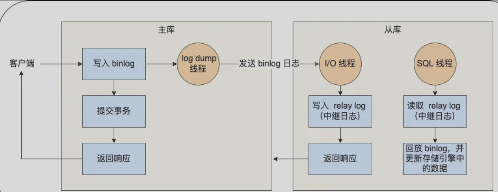
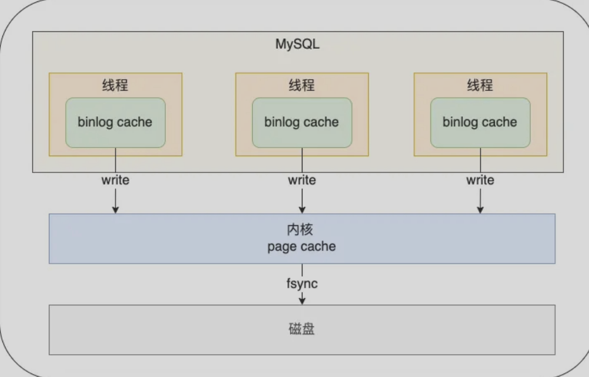
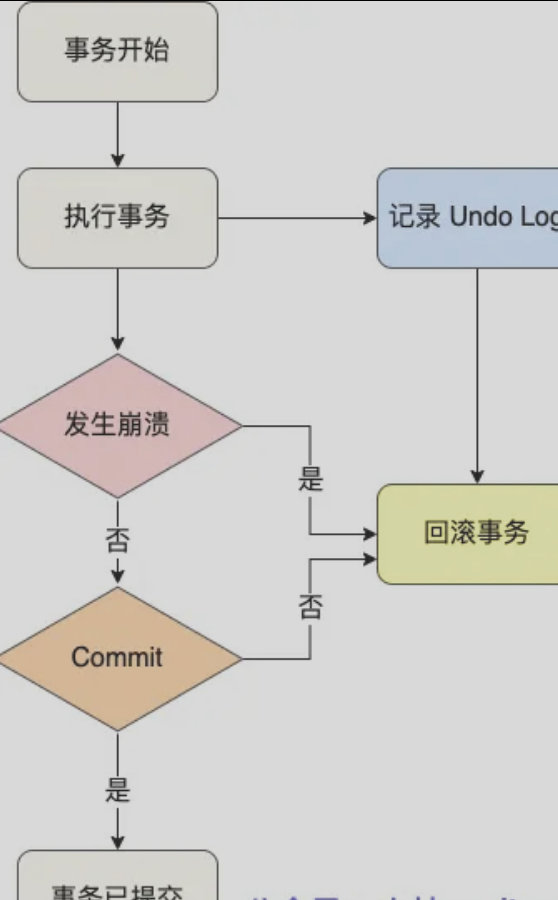
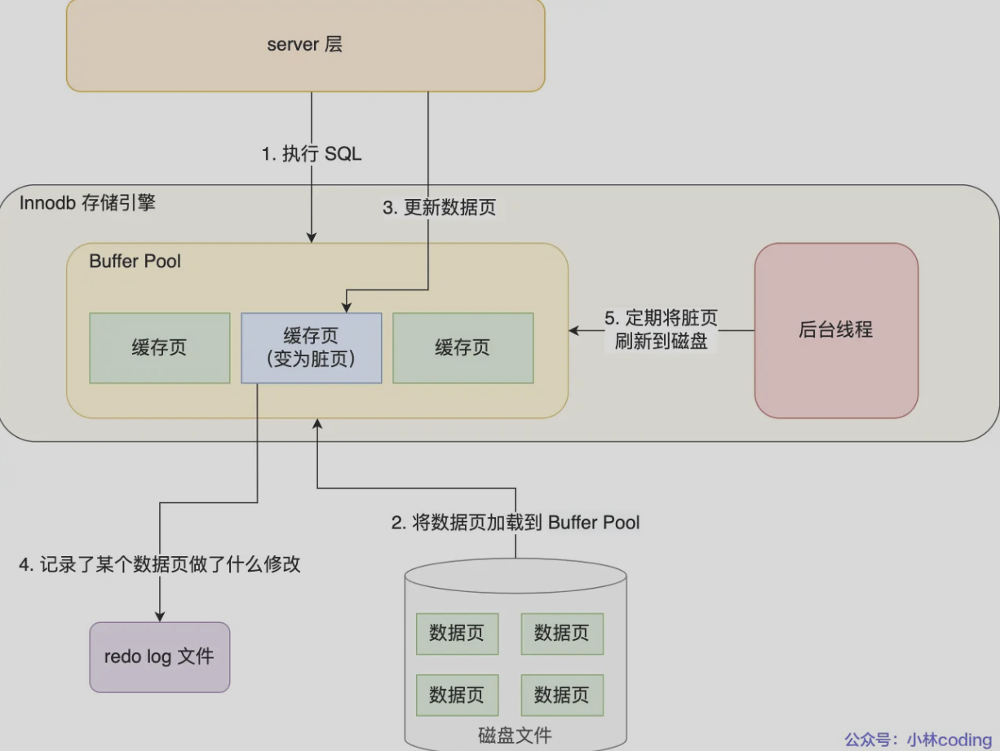
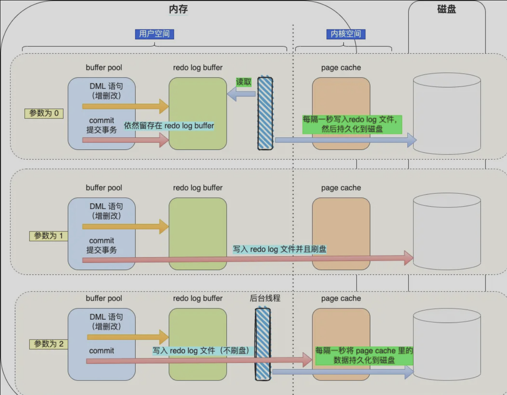
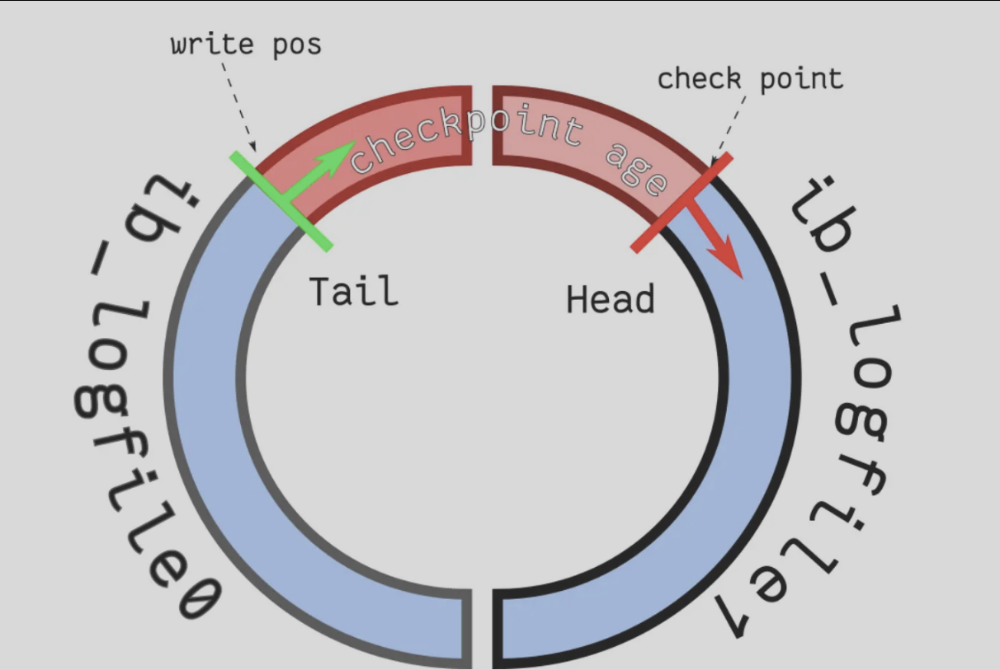
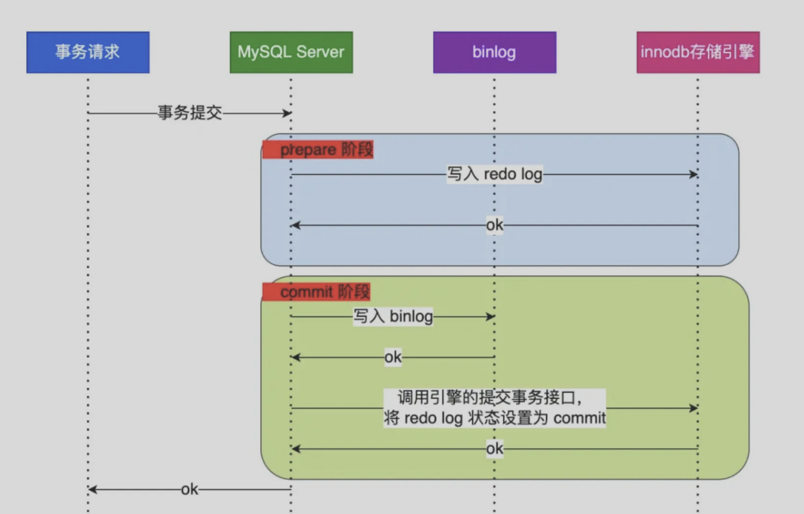

MySQL-日志
分类
- redo log 重做日志，InnoDB存储引擎层生成的日志，实现事务的持久性，主要用于故障回复
- undo log 回滚日志，InnoDB存储引擎层生成的日志，实现事务的原子性，主要用于事务回滚和MVCC
- binlog 二进制日志，Server层生成的日志，主要用于数据备份和主从复制
- relay log 中继日志，用于主从复制场景下，从节点通过io线程拷贝主节点的binlog后本地生成的日志
- 慢查询日志，记录执行时间过长的sql，需要设置阈值后手动开启
binlog
介绍
MySQL完成更新操作后会生成一条binlog，等之后事务提交，将该事务的执行过程中产生的所有的binlog统一写入binlog文件
binlog是追加写，写满一个文件就创建一个新的文件继续写，不会覆盖以前的日志，保存全量日志，用于备份回复、主从复制
binlog文件记录所有数据库表结构变更和数据库表数据修改的日志，不会记录查询操作
binlog的三种格式：statement（默认）、row、mixed
- statement：每条修改数据的sql都会被记录到binlog中，主从复制中从节点根据sql语句重现；存在动态函数问题，比如使用now、uuid等函数，在主库和从库结果不同，导致数据不一致
- row：记录行数据最终被修改成什么样子，不存在动态函数问题，缺点是记录的是每行数据的变化的结果，会导致binlog文件变大
- mixed：包含前两种，根据不同情况自动使用statement还是row
主从复制
MySQL主从复制依赖于binlog，记录MySQL所有的变化以二进制形式保存到磁盘上；复制的过程就是将binlog中的数据从主库传输到从库上（异步）
异步复制（默认）具体流程：
- 写入binlog，主库收到客户端提交事务请求会先写入binlog，然后提交事务，更新数据
- 同步binlog，从库会建立一个专门的IO线程，连接主库的log dump线程，接收主库的binlog日志，再把binlog信息写入自己的relay log中继日志中，最后返回主库复制成功的响应
- 回放binlog，从库创建一个专门回放binlog的线程，读取中继日志，回放binlog更新数据，实现主从数据一致性
读写分离，只写入主库，读只从从库

还有同步复制（主库提交事务的线程要等待所有从库同步完成才返回客户端结果）、半同步复制（主库不等到所有从库同步完成，等待一部分即可）、异步复制（主库不会等待binlog同步到从库，直接返回给客户端）
binlog什么时候刷盘？
默认事务提交的时候将binlog cache写入binlog文件，可以通过参数控制sync_binlog：
- 0，操作系统决定什么时候将数据持久化磁盘
- 1，每次事务提交
- N，每N次事务提交

undolog
逻辑日志，用于撤销回滚的日志，保证事务原子性
作用
1、事务回滚：每对一行记录进行操作（插入、更新、删除）时，要把回滚时需要的信息记录到undo log中，也就是记录相反的内容
- 插入一条数据时，记该记录的主键，回滚时删除
- 删除一条数据时，记该记录的全部内容，回滚时插入
- 更新一条数据时，记被更新列的旧值，回滚时更新为旧值
2、实现MVCC

redolog
介绍
redolog可以保证事务的持久性，防止断电导致数据丢失的问题
redo log是物理日志，记录某个数据也做了什么修改，每当执行一个事务就会产生这样的一条或者多条物理日志
对于修改的数据，是需要先写到buffer pool中，对应数据页变成脏页，然后在合适的时间刷新到磁盘中（undolog一个后写技术），这是WAL后写技术
WAL：简单来说就是 先写日志到磁盘，数据延迟刷盘
MySQL 的写操作并不是立刻写到磁盘上，而是先把redolog日志写入磁盘，然后在合适的时间再写到磁盘上

数据要写入磁盘，为什么redolog也要写入磁盘？
- 实现了事务的持久性，让MySQL有了灾难恢复的能力，保障MySQL在任何时间段突然崩溃，重启之后已提交的记录都不会小时
- redolog是追加操作，磁盘操作是顺序写；写入数据要先要找到写入位置，然后写入，是随机写，WAL技术将写操作从随机写变成了顺序写，提高了MySQL写入磁盘的性能
redo log什么时候刷盘？
首先要知道，redo log日志并不是直接写入磁盘的，直接写入会产生大量IO操作，redo log是先写入自己的缓存 redo log buffer（默认16MB），后续进行刷盘
刷盘的时机：
- MySQL正常关闭
- 缓冲区写入量超过一半
- 每秒后台线程把buffer持久化到磁盘
- 每次事务提交把buffer持久化到磁盘（通过
innodb_flush_log_at_trx_commit参数控制）
innodb_flush_log_at_trx_commit参数控制事务提交是否持久化：

redo log文件写满了怎么办？
redo log是有两个文件，文件的大小可以通过redo log file设置，进行循环写写入的，当buffer pool脏页刷新到磁盘对应的redo log记录就没用了，可以进行擦除
针对并发量大的系统，redologfile的大小很重要，因为如果redolog文件满了，那么意味这MySQL不能执行新的更新操作，导致MySQL被阻塞，等待buffer pool中的脏页刷新到磁盘，也就是redo log file腾出位置，MySQL才会恢复正常运行

三者结合的问题
有了undo log为什么还要redo log？
undo log 记录的是修改前的数据，主要用于事务回滚和 MVCC，保证的是原子性；redo log 记录的是对数据页的物理修改，主要用于数据库宕机后的重做恢复，保证的是持久性。
数据库崩溃时，不仅要把未提交事务回滚掉，还要把已经提交但数据页还没刷盘的修改恢复出来。undo log只能解决回滚未提交的事务，解决不了把已提交的数据恢复，这个事情必须靠 redo log
有了binlog为什么还要redolog？
binlog日志是server层的，作用只是用来归档 备份 主从复制，没用crash-safe能力
redo log是InnoDB存储引擎的，实现crash-safe能力
两者区别：
- 使用对象不同，server层/InnoDB
- 文件格式不同，三种格式/物理日志
- 写入方式不同，追加写/循环写
- 用途不同，备份、主从复制/故障恢复
两阶段提交
为什么需要：事务提交后，redo log和binlog都要持久化磁盘，这两个是独立逻辑，可能存在半成功的状态；为了保证两个日志一致性，MySQL使用内部XA事务 两阶段提交
两阶段提交流程
分为prepare和commit两个阶段
- prepare阶段：将内部XA事务id写入到redo log，同时把redo log对应的事务状态设置为prepare，将redo log持久化到磁盘
- commit阶段：把内部XA事务id写入到binlog，然后把binlog持久化到磁盘，接着把redo log对应的事务状态设置为commit，这个过程不需要持久化到磁盘，只需要写到文件系统的page cache

两阶段提交异常处理
- 不管是prepare还是commit阶段发生异常，只要事务没用提交commit那么redo log事务状态都是prepare，可以根据XID去binlog找是否有相同对应的，如果有那么提交事务，如果没用回滚事务
- 对于处于 prepare 阶段的 redo log，即可以提交事务，也可以回滚事务，这取决于是否能在binlog 中查找到与 redo log 相同的 XID，如果有就提交事务，如果没有就回滚事务。这样就可以保证redo log 和 binlog 这两份日志的一致性了
两阶段提交的问题
-
磁盘IO次数高：双1配置，每次事务提交，redolog和binlog都要持久化磁盘
-
锁竞争激烈：能保证单事务两个日志内容一致，但在多事务情况下，不能保证两者的提交顺序一致，所以需要加锁保证多事务一致性
为什么锁竞争激烈？
一个事务获取到锁才能进入prepare，一直到commit阶段结束才能释放锁，下一个事务才能进入prepare阶段
虽然解决了顺序一致性问题，但是并发量高的时候，会导致对锁的争用，性能差
两阶段提交的优化
- 引入了binlog组提交，当有多个事务的时候，会将多个binlog刷盘合并到一个，从而减少磁盘IO
- prepare阶段不变，commit拆分为三个阶段
- flush阶段：多个事务按进入的顺序将 binlog 从 cache 写入文件（不刷盘）
- sync阶段：对 binlog 文件做 fsync 操作（多个事务的 binlog 合并一次刷盘）
- commit阶段：各个事务按顺序做 InnoDB commit 操作
update语句具体执行流程
比如说具体执行一条更新语句update t set name = 'y' where id = 1
- 执行器负责具体执行，会调用存储引擎接口，通过主键索引树搜索获取id=1的记录
- 如果id=1所在的数据页在buffer pool中，那么直接返回给执行器执行
- 如果id=1所在数据页不在buffer pool中，那么把这个数据页从磁盘读入到buffer，返回记录给执行器
- 执行器得到聚簇索引后，先对比更新前后记录是否相同
- 相同，直接返回不进行后续更新操作
- 不相同，把更新前后的记录都作为参数传个InnoDB层，让InnoDB执行更新操作
- 开启事务，InnoDB层更新记录前，首先记录相应的undolog，也就是把旧值给记下来，undolog会写入buffer pool的undo页
- InnoDB层开始更新记录，先更新内存标记为脏页，把记录写到redo log中，这就算更新完成了。redo log是采用WAL技术，把随机写变为顺序写，这样更新操作结束了
- 更新完成后，要记录该语句对应的binlog，此时binlog先保存到binlog cache中，并不会刷新到磁盘文件，在事务提交时统一把该事务运行过程中的所有binlog刷盘
- 事务提交，采用两阶段提交保证redo log和binlog一致性
简单说下：
看数据页是不是在buffer pool中=》对比更新前后是否相同=》记录undolog=》数据页标记为脏页，记录redo log=》记录binlog=》两阶段提交